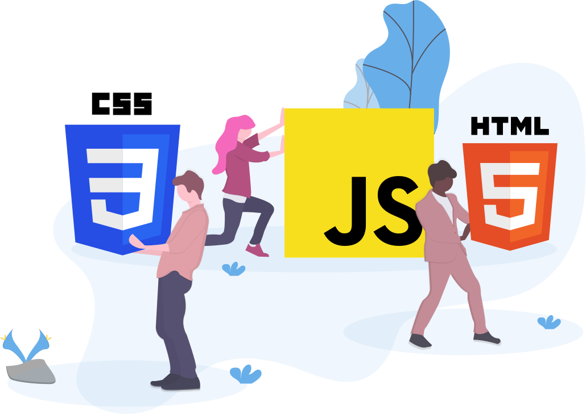

About Me
I'm Liam Malone, a 20-year-old student who is passionate about coding and artificial intelligence
a aspiring software developer. I like learning about new programming languages and keeping up with
the ever changing technological landscape. I'm committed to improving my abilities and remaining up to date with
developments in software development and artificial intelligence
In my free time, I enjoy spending time with my dog I really enjoy reading going on walks and
working on myself
I also like to play video games one of my favorites is Elden ring. I also really enjoy keeping up
with shows like one piece and staying on top of new technology stuff
